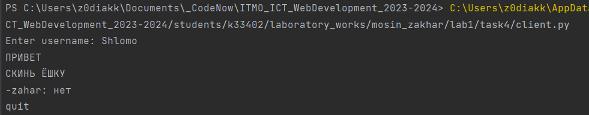

ЛАБОРАТОРНАЯ РАБОТА №1 : Работа с сокетами
Цель: Овладеть практическими навыками и умениями реализации web-серверов и использования сокетов.
Выполнение работы
Задание 1
Реализовать клиентскую и серверную часть приложения. Клиент отсылает серверу сообщение «Hello, server». Сообщение должно отразиться на стороне сервера. Сервер в ответ отсылает клиенту сообщение «Hello, client». Сообщение должно отобразиться у клиента.
Требования:
- Обязательно использовать библиотеку socket.
- Реализовать с помощью протокола UDP
client.py:
import socket
enc = "utf-8"
port = 2448
buffsize = 1024
s = socket.socket(socket.AF_INET, socket.SOCK_DGRAM)
s.connect(("localhost", port))
data = bytes("Hello, server", enc)
s.send(data)
print("Sent data to server:", data.decode(enc))
data = s.recv(buffsize)
print("Received data from server:", data.decode(enc))
server.py:
import socket
import signal
enc = "utf-8"
port = 2448
buffsize = 1024
s = socket.socket(socket.AF_INET, socket.SOCK_DGRAM)
s.bind(("localhost", port))
signal.signal(signal.SIGINT, signal.SIG_DFL)
while True:
s.settimeout(60)
try:
data, addr = s.recvfrom(buffsize)
print("Received data from client:", data.decode(enc))
data = bytes("Hello, client", enc)
s.sendto(data, addr)
print("Sent data to client:", data.decode(enc))
except socket.timeout:
print("No data has been received from client within 60 seconds ._.")
break
except KeyboardInterrupt:
print("Server terminated by user :(")
break
s.close()
Демонстрация работы задания 1

Задание 2
Реализовать клиентскую и серверную часть приложения. Клиент запрашивает у сервера выполнение математической операции, параметры, которые вводятся с клавиатуры. Сервер обрабатывает полученные данные и возвращает результат клиенту.
Варианты:
- a. Теорема Пифагора
- b. Решение квадратного уравнения. (Мой вариант)
- c. Поиск площади трапеции.
- d. Поиск площади параллелограмма.
Требования:
- Обязательно использовать библиотеку socket.
- Реализовать с помощью протокола TCP.
client.py:
import socket
enc = "utf-8"
port = 2448
buffsize = 1024
s = socket.socket(socket.AF_INET, socket.SOCK_STREAM)
s.connect(("localhost", port))
while True:
a = int(input("Enter a: "))
b = int(input("Enter b: "))
c = int(input("Enter c: "))
data = "{} {} {}".format(a, b, c)
s.send(data.encode(enc))
print("Sent data to server:", data)
response = s.recv(buffsize)
print("Received data from server:", response.decode(enc))
if input("Continue? Y/N: ").lower() == "n":
break
s.close()
server.py:
import socket
import signal
enc = "utf-8"
port = 2448
def solve_quadratic_equation(a, b, c):
if a == 0 or a is None:
return None, None
if b == 0 or b is None:
return None, None
if c == 0 or c is None:
return 0, 0
d = b ** 2 - 4 * a * c
if d < 0:
return None, None
x1 = (-b + d ** 0.5) / (2 * a)
x2 = (-b - d ** 0.5) / (2 * a)
return x1, x2
s = socket.socket(socket.AF_INET, socket.SOCK_STREAM)
s.setsockopt(socket.SOL_SOCKET, socket.SO_REUSEADDR, 1)
s.bind(("localhost", port))
s.listen(1)
signal.signal(signal.SIGINT, signal.SIG_DFL)
print("Waiting for a connection...")
while True:
try:
client_socket, client_address = s.accept()
print("Accepted connection from: ", client_address)
data = client_socket.recv(1024)
print("Received data from client: ", data.decode(enc))
a, b, c = map(int, data.decode(enc).split())
x1, x2 = solve_quadratic_equation(a, b, c)
if x1 is None:
response = "No roots"
else:
response = "x1 = {}, x2 = {}".format(x1, x2)
client_socket.send(response.encode(enc))
print("Sent data to client: ", response)
client_socket.close()
except KeyboardInterrupt:
print("Server terminated by user.")
break
s.close()
Демонстрация работы задания 2


Задание 3
Реализовать серверную часть приложения. Клиент подключается к серверу. В ответ клиент получает http-сообщение, содержащее html-страницу, которую сервер подгружает из файла index.html.
Требования:
- Обязательно использовать библиотеку socket.
server.py
import socket
import signal
port = 2448
buffsize = 1024
s = socket.socket(socket.AF_INET, socket.SOCK_STREAM)
s.bind(("localhost", port))
s.listen(1)
signal.signal(signal.SIGINT, signal.SIG_DFL)
def send_html_response(client_socket):
with open("index.html", "rb") as html_file:
html_content = html_file.read()
response = b"HTTP/1.1 200 OK\r\n"
response += b"Content-Type: text/html\r\n"
response += b"Content-Length: " + str(len(html_content)).encode() + b"\r\n"
response += b"\r\n"
response += html_content
client_socket.send(response)
while True:
try:
print("Waiting for client to connect")
client_socket, client_address = s.accept()
print("Accepted connection from: ", client_address)
request = client_socket.recv(buffsize)
print(request.decode())
send_html_response(client_socket)
client_socket.close()
except KeyboardInterrupt:
print("Server terminated by user.")
break
Демонстрация работы задания 3
Задание 4
Реализовать двухпользовательский или многопользовательский чат. Реализация многопользовательского часа позволяет получить максимальное количество баллов. Обязательно использовать библиотеку
Требования:
- Реализовать с помощью протокола TCP – 100% баллов, с помощью UDP – 80%.
- Обязательно использовать библиотеку threading.
- Для реализации с помощью UDP, thearding использовать для получения сообщений у клиента.
- Для применения с TCP необходимо запускать клиентские подключения И прием и отправку сообщений всем юзерам на сервере в потоках. Не забудьте сохранять юзеров, чтобы потом отправлять им сообщения.
client.py:
import socket
import threading
enc = "utf-8"
port = 2448
def receive_messages(client_socket):
while True:
try:
incoming_message = client_socket.recv(1024).decode(enc)
if not incoming_message:
break
else:
print(f"-{incoming_message.strip()}")
except Exception as e:
print("Error while receiving message:", e)
break
def main():
client_socket = socket.socket(socket.AF_INET, socket.SOCK_STREAM)
client_socket.connect(("localhost", port))
username = input("Enter username: ")
client_socket.send(username.encode(enc))
receive_thread = threading.Thread(target=receive_messages, args=(client_socket,))
receive_thread.daemon = True # thread dies when main thread (the only non-daemon thread) exits.
receive_thread.start()
while True:
message = input("")
client_socket.send(message.encode(enc))
if message.lower() == "quit":
break
client_socket.close()
if __name__ == "__main__":
main()
server.py:
import socket
import threading
import signal
enc = "utf-8"
port = 2448
buffsize = 1024
clients = {}
def handle_client(client_socket, username):
try:
while True:
message = client_socket.recv(1024).decode(enc)
if not message:
break
for client, user in clients.items():
if client != client_socket:
client.send(f"{username}: {message}".encode(enc))
except Exception as e:
print("Error occurred: ", e)
finally:
del clients[client_socket]
client_socket.close()
print(username, " just disconnected")
def main():
server_socket = socket.socket(socket.AF_INET, socket.SOCK_STREAM)
server_socket.bind(("localhost", port))
server_socket.listen(5)
signal.signal(signal.SIGINT, signal.SIG_DFL)
print("Waiting for a connection...")
while True:
client_socket, client_address = server_socket.accept()
print("Accepted connection from: ", client_address)
username = client_socket.recv(buffsize).decode(enc).strip()
clients[client_socket] = username
client_thread = threading.Thread(target=handle_client, args=(client_socket, username))
client_thread.start()
if __name__ == "__main__":
main()
Демонстрация работы задания 4



Задание 5
Необходимо написать простой web-сервер для обработки GET и POST http запросов средствами Python и библиотеки socket.
Задание: сделать сервер, который может:
- Принять и записать информацию о дисциплине и оценке по дисциплине.
- Отдать информацию обо всех оценах по дсициплине в виде html-страницы.
server.py:
import socket
import re
import signal
port = 2448
enc = "utf-8"
student_marks = {
"Zahar": [9],
"Alexei": [88],
"Maksim": [33]
}
html_template = """
<!DOCTYPE html>
<html>
<head>
<title>Points</title>
</head>
<body>
<h1>Student Points</h1>
<ul>
{student_list}
</ul>
<form method="post" action="/">
<label for="name">Name:</label>
<input type="text" id="name" name="name" required>
<br><br>
<label for="marks">Points:</label>
<input type="number" id="marks" name="marks" required>
<br><br>
<input type="submit" value="Submit">
</form>
</body>
</html>
"""
def generate_student_list():
student_list = ""
for name, marks in student_marks.items():
mark_str = ", ".join(map(str, marks))
student_list += f"<li> {name} : {mark_str}"
return student_list
def handle_request(request):
print(request)
if request.startswith("GET"):
response_body = html_template.format(student_list=generate_student_list())
response = f"HTTP/1.1 200 OK\r\nContent-Length: {len(response_body)}\r\n\r\n{response_body}"
elif request.startswith("POST"):
match = re.search(r"name=(\w+)&marks=(\d+)", request).groups()
if match:
post_data = match
name, mark = post_data[0], int(post_data[1])
if name in student_marks:
student_marks[name].append(mark)
else:
student_marks[name] = []
student_marks[name].append(mark)
response = "HTTP/1.1 302 Found\r\nLocation: /"
else:
response = "HTTP/1.1 400 Bad Request\r\nContent-Length: 0\r\n\r\n"
else:
response = "HTTP/1.1 400 Bad Request\r\nContent-Length: 0\r\n\r\n"
return response
def main():
server_socket = socket.socket(socket.AF_INET, socket.SOCK_STREAM)
server_socket.bind(("localhost", port))
server_socket.listen(5)
signal.signal(signal.SIGINT, signal.SIG_DFL)
print("Server is listening on port ", port)
while True:
client_socket, client_address = server_socket.accept()
print("Accepted connection from: ", client_address)
request = client_socket.recv(1024).decode(enc)
response = handle_request(request)
client_socket.sendall(response.encode(enc))
client_socket.close()
if __name__ == "__main__":
main()
Демонстрация работы задания 5